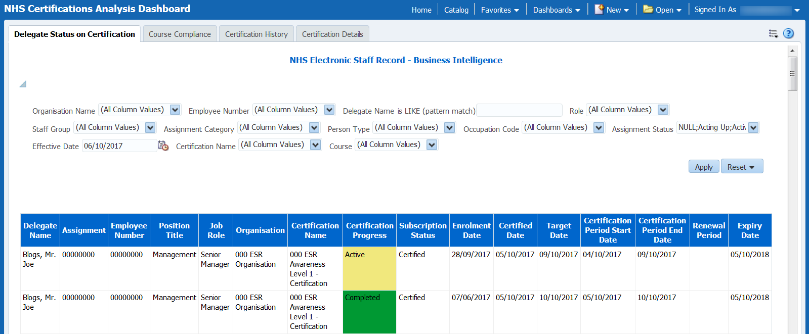
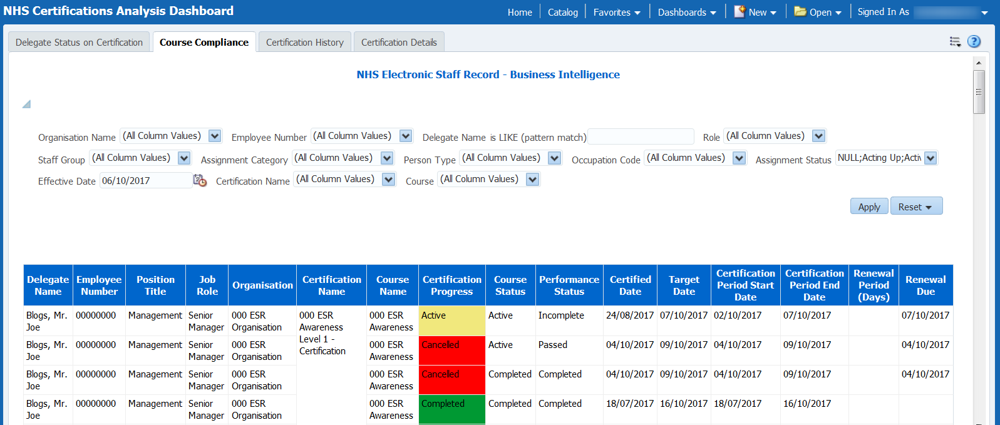
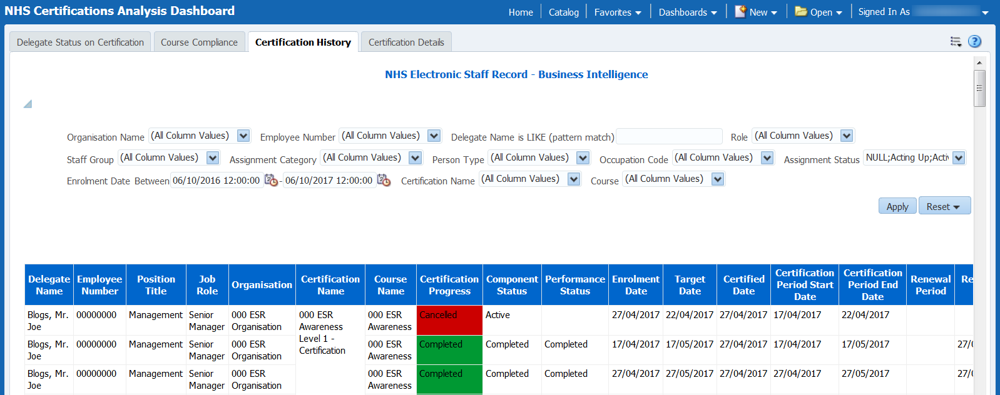
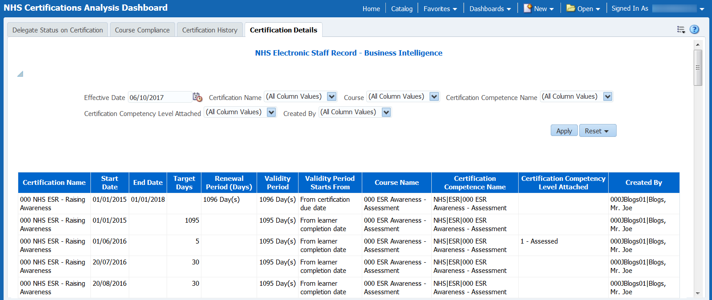

Certifications Analysis Dashboard
Description
The NHS Certifications Analysis Dashboard is designed to provide users with intelligence around the setup of available certifications and information of the delegates subscribed to them.
Allocation
This dashboard is available to the following URPs:
XXX BI Administration
XXX Learning Administration
XXX Administrator Self Service (Payroll Approvals Not Required) (Excludes Certification Details)
XXX Administrator Self Service (Payroll Approvals Required) (Excludes Certification Details)
XXX Manager Self Service (Payroll Approvals Not Required) (Excludes Certification Details)
XXX Manager Self Service (Payroll Approvals Required) (Excludes Certification Details)
XXX Supervisor Self Service (Excludes Certification Details)
XXX Supervisor Self Service (Limited Access) (Excludes Certification Details)
Prompts
Organisation
Employee Number
Delegate Name is LIKE
Role
Staff Group
Assignment Category
Assignment Status
Person Type
Occupation Code
Delegate Status on Certification
Description
This report shows the current status of each employee/assignment on certifications they are subscribed to. Certifications are returned based on the period start and end date.
Data Items
| Delegate Name | Assignment Number |
|---|---|
| Employee Number | Position Title |
| Job Role | Organisation |
| Certification Name | Certification Progress |
| Subscription Status | Enrolment Date |
| Certified Date | Target Date |
| Certification Period Start Date | Certification Period End Date |
| Renewal Period | Expiry Date |
Prompts
Effective Date
Certification Name
Course
View Selector
None
Example Screenshot

Course Compliance
Description
This report is designed to show the status of each person against each course of each certification they are subscribed to. This is similar to the above but includes component details (including course status).
Data Items
| Delegate Name | Employee Number |
|---|---|
| Position Title | Job Role |
| Organisation | Certification Name |
| Course Name | Certification Progress |
| Course Status | Performance Status |
| Certified Date | Target Date |
| Certification Period Start Date | Certification Period End Date |
| Renewal Period (Days) | Renewal Due |
Prompts
Effective Date
Certification Name
Course
View Selector
None
Example Screenshot

Certification History
Description
Report to show the history of each person on each component of each certification they are subscribed to. The report will show the details of each time they played the course throughout each renewal/certification period.
Data Items
| Delegate Name | Position Title |
|---|---|
| Employee Number | Organisation |
| Job Role | Course Name |
| Certification Name | Certification Progress |
| Course Status | Performance Status |
| Enrolment Date | Target Date |
| Certified Date | Certification Period Start Date |
| Certification Period End Date | Renewal Period |
| Renewal Due |
Prompts
Enrollment Date Between
Certification Name
Course
View Selector
None
Example Screenshot

Certification Details
Description
Report is designed to provide the details of each certification that is available within the OLM Catalogue.
Data Items
| Certification Name | Start Date |
|---|---|
| End Date | Target Days |
| Renewal Period (Days) | Validity Period |
| Validity Period Starts From | Course Name |
| Certification Competence Name | Certification Competence Level Achieved |
| Created By | Last Updated By |
| Created Date | Last Updated Date |
| Learning Certification Competency Update Setting | Auto Enrol Opt Out |
Prompts
Certification Name
Certification Competence Name
Certification Competence Level Attached
Created By
Course
View Selector
None
Example Screenshot
